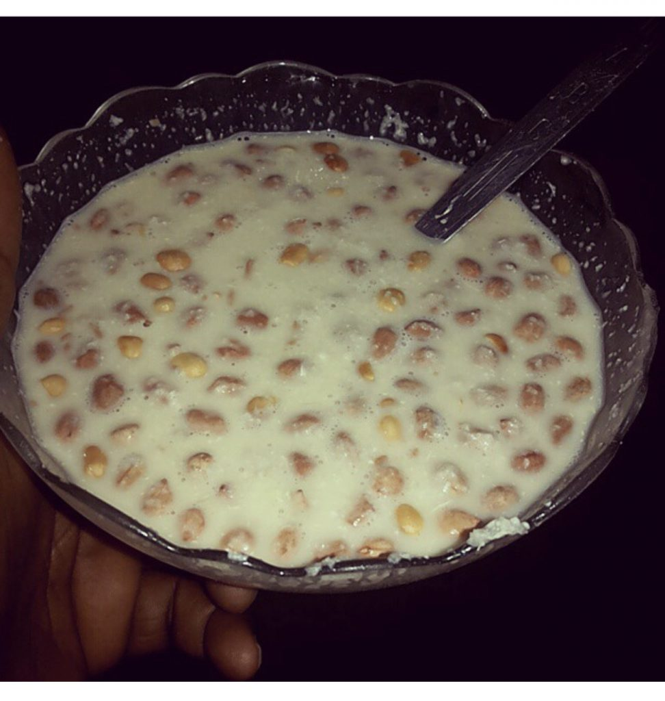

Gari

Description
This is a recipe on how to prepare gari soakings the Ghanaian student way.
Ingredients
- 250g of fine gari
- Roasted groundnut
- Non-diary creamer or milk
- Cold Water
- Sugar
Steps
- Pour to the gari into your serving bowl.
- Add 2 spoons of sugar.
- Pour a considerable amount of the roasted groundnut into the mix.
- Mix milk with the gari if the milk is powdered, or soak it with creamer milk
- Add small amount of water, making sure it's not too much to become light
- Stir and serve
Home